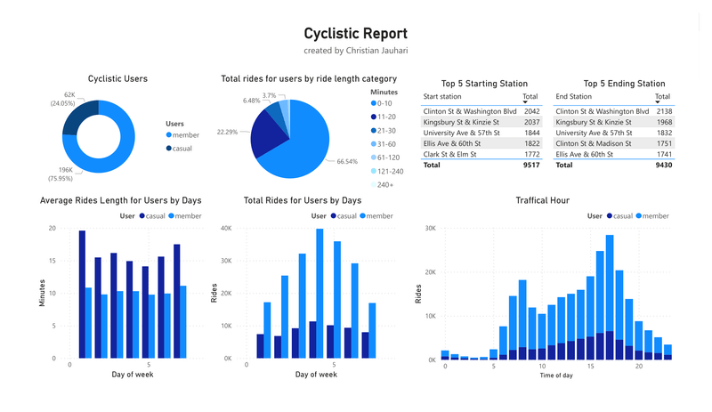

Case Study
The Challenge
Cyclistic is a Chicago bike-share program featuring 5,800+ bicycles and 600 docking stations. The marketing team needed to understand how annual members and casual riders use the service differently — to build a strategy that converts casual riders into paying members.
Acting as a junior data analyst in the marketing analytics team, I analyzed historical trip data to surface behavioral patterns and develop data-driven marketing recommendations.
How do annual members and casual riders use Cyclistic bikes differently — and what strategies would encourage casual riders to convert to memberships?
Data Preparation
The dataset contained 258,678 trip records across 13 fields: ride ID, bicycle type, start/end timestamps, station names, coordinates, and user type. Key steps:
- Data Cleaning: Removed duplicate trip IDs; evaluated null station data for relevance and retained where appropriate
- Feature Engineering: Added ride_length (end time − start time) and day_of_week columns for temporal analysis
- Grouping: Segmented ride lengths into 10-minute buckets to study distribution patterns
- Tools: Microsoft Excel and Power Query for all data processing and transformation
Analysis & Key Findings
Ride Distribution
76% of all trips are by annual members, 24% casual. Despite being fewer in count, casual riders consistently take longer individual trips.
Duration Breakdown
99% of rides are under 60 min. 95.3% under 30 min. 66.5% under 10 min — pointing to a predominantly short-trip market.
Member Short-Trip Dominance
Among sub-10-minute rides, 78% are annual members — 3× more than casual riders. Members use bikes for quick, purposeful commuting.
Casual Leisure Pattern
Casual riders peak Tuesday 2 AM with 21.25 min avg ride length, 79% casual — pointing to leisure use rather than commuting.

Peak Time & Station Analysis
- Peak Hour: 5 PM — accounts for 8.46% of all daily rides across both user types
- Peak Day: Thursday — 13.1% of all weekly rides concentrated here
- Highest Avg Ride Length by Hour: 2 PM at 13.23 min per ride
- Highest Avg Ride Length by Day: Tuesday 2 AM at 21.25 min (79% casual)
- Top Station: Clinton St & Washington Blvd — proximity to Loop transit and tourist spots drives both commuter and leisure traffic

Recommendations
- 30-Minute Pass Membership: Create a membership tier for 30-min rides, 10 trips/week — matching casual riders' typical usage pattern at a competitive price
- Peak Hour Promotions: Run targeted membership campaigns 3–6 PM with time-limited discounts to capture high-intent riders
- Referral Program: Reward existing members for inviting casual riders — leverage social proof at the point of use
- Station Infrastructure: Expand docking and marketing visibility at high-traffic stations near transit and attractions
- Low-Day Weekend Passes: Introduce special Sunday/Monday pricing to stimulate engagement on the lowest-usage days
Members use Cyclistic as a utility tool for short, frequent commutes. Casual riders use it for leisure. The conversion message should emphasize value-per-commute — not just cost savings. Target the 30-minute window where behavior overlap is highest.
Tools Used: Microsoft Excel · Power Query · Data Visualization · Statistical Analysis